Data Structure
1. Write a C program to declare an integer array, print the base address of the array and also find the nth terms address.
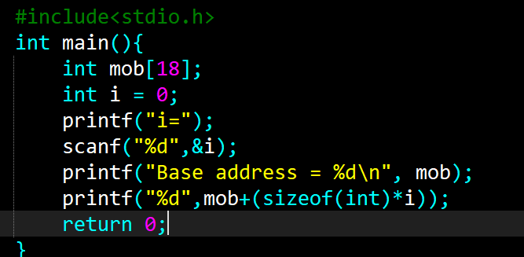
#include<stdio.h>
int main(){
int mob[18];
in i =0;
printf("i= ");
scanf("%d", &i);
printf("Base address = %d\n", mob);
printf("%d", mob+(sizeof(int)*i));
return 0;
}
Output:-
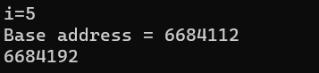
2. Write a C program to dynamically allocate memory for an integer array using malloc().
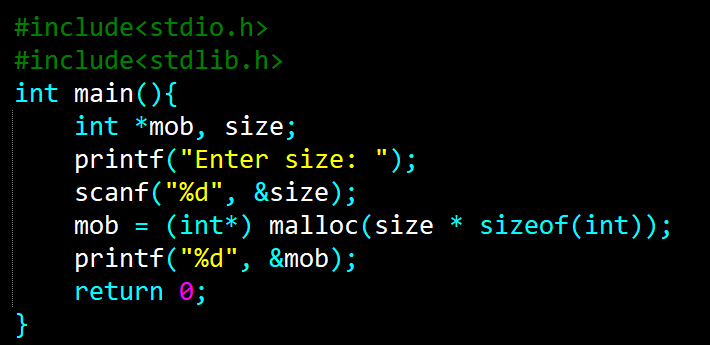
#include<stdio.h>
#include<stdlib.h>
int main(){
int *mob,size;
printf("Enter size: ");
scanf("%d", &size);
mob = (int*) malloc(size *sizeof(int));
printf("%d", &mob);
return 0;
}
Output:-
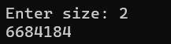
3. Write a C Program to find the size of each data type in C.
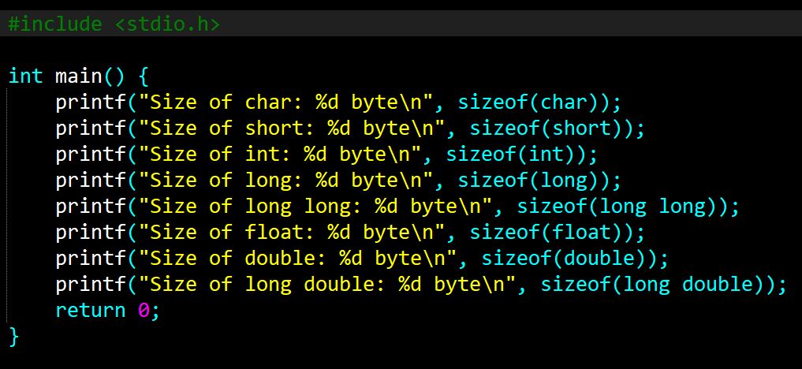
#include<stdio.h>
int main(){
printf("size of char: %d bytes\n", sizeof(char));
printf("size of short: %d bytes\n", sizeof(short));
printf("size of int: %d bytes\n", sizeof(int));
printf("size of long: %d bytes\n", sizeof(long));
printf("size of long long: %d bytes\n", sizeof(long long));
printf("size of float: %d bytes\n", sizeof(float));
printf("size of double: %d bytes\n", sizeof(double));
printf("size of long double: %d bytes\n", sizeof(long double));
return 0;
}
Output:-
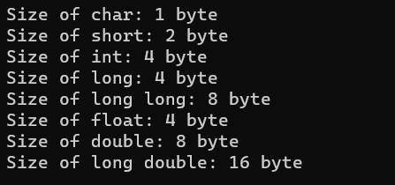
4. Write a C program to Implement traversal on static array.
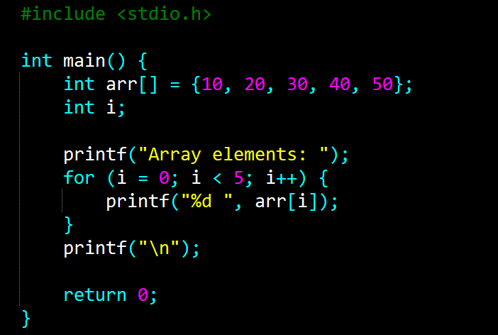
#include<stdio.h>
int main(){
int arr[] = {10,20,30,40,50};
int i;
printf("Array elements: ");
for(i=0; i<5; i++){
printf("%d",arr[i]);
}
printf("\n");
return 0;
}
Output:-
5. Write a C program for linear searching in an array.
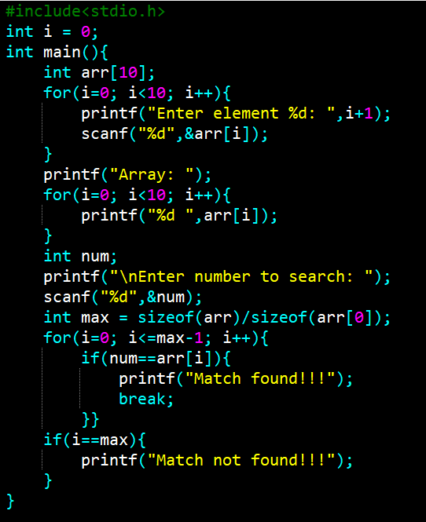
Output:-
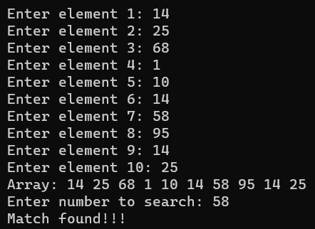
6. Write a C program for Binary searching in an array.
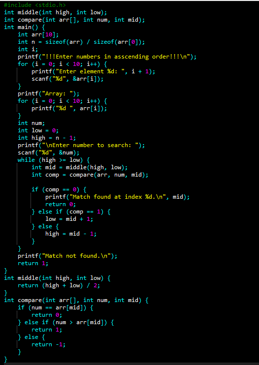
Output:-
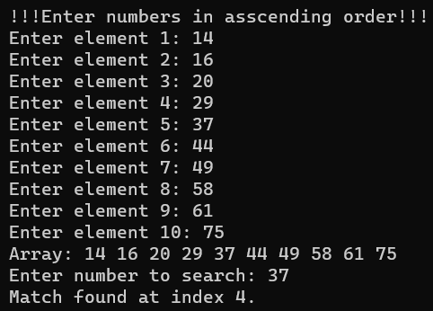
7. Write a C program to change the decimal number into a binary number..
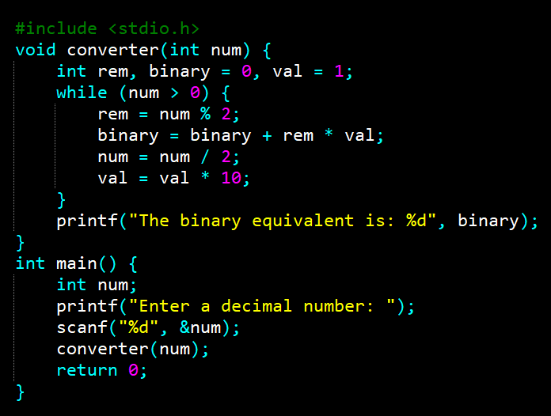
Output:-
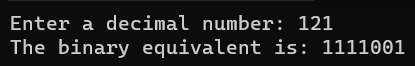
8. Write a C program to show the implementation of stack operation.
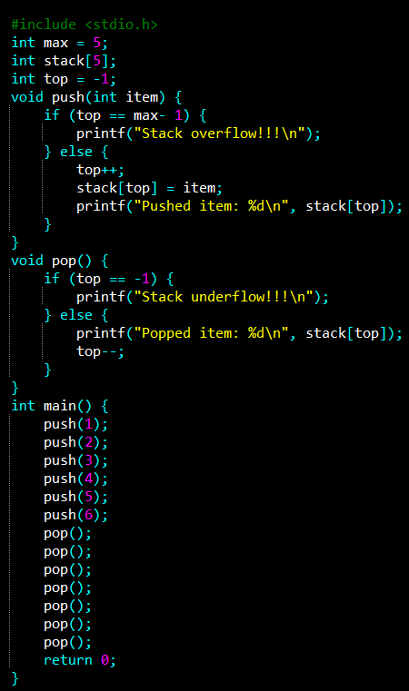
Output:-
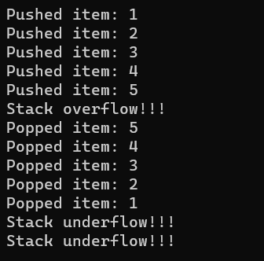
9. Write a C program to change the binary number into a decimal number.
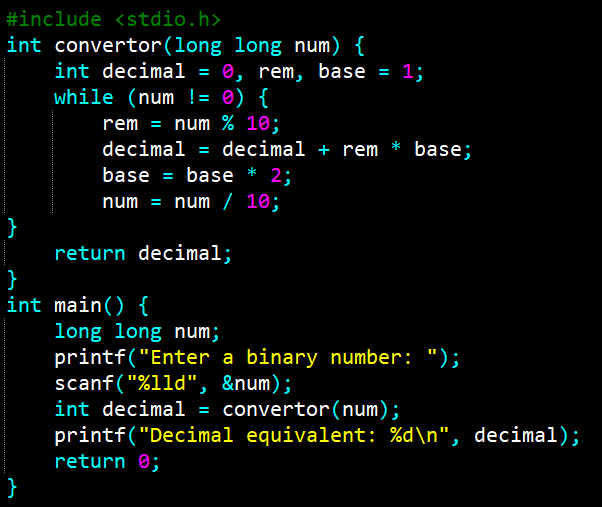
Output:-
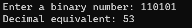
10. Write a C program for implimentation of linked stack.
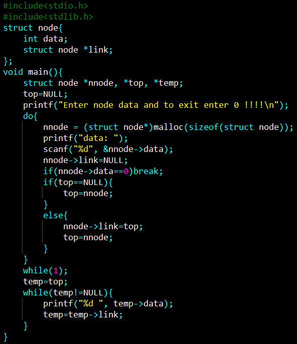
Output:-
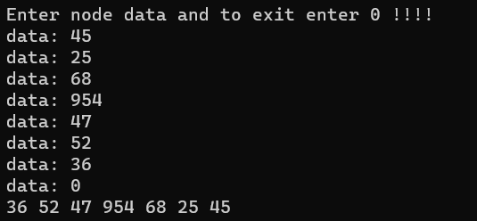
11. Write a C program for implimentation of linked queue.
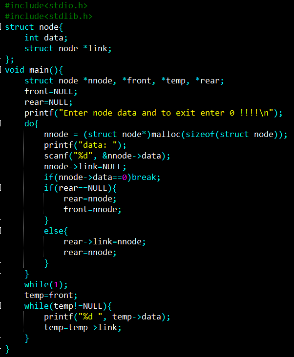
Output:-
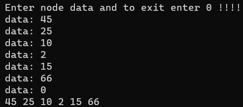
11. Write a C program for implimentation of Tree.

Output:-